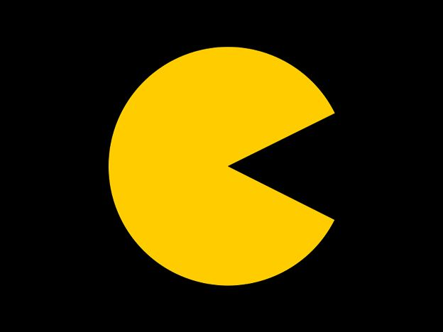
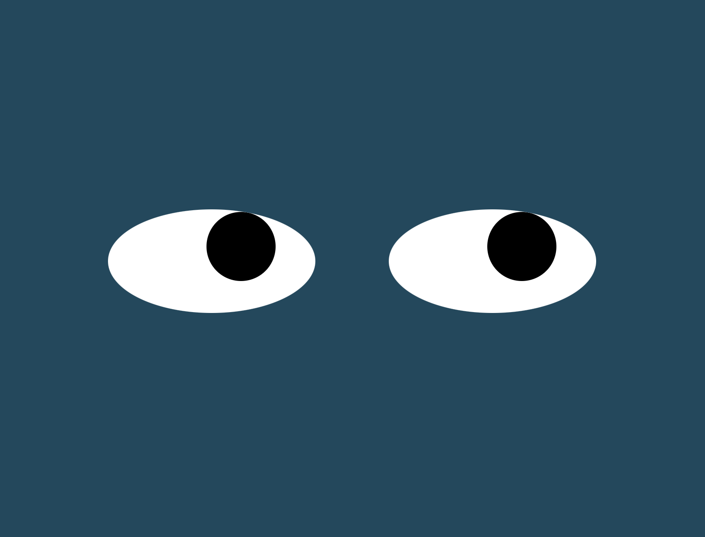

Current Projects
These projects have all been completed during my course of study in the MIT Full Stack Development Course. They showcase a number of the skills that I have learned using HTML, CSS, and JavaScript.

PacMan Factory
On this page, make some PacMan and watch them randomly move across the screen! Click on the image to see it in action. Check out the repo to see the bones.

Moving Eyes
These eyes are always watching....your mouse that is! Try is out and see how fast you can get those pupils moving! Click the picture to see the page and the button for the brains!